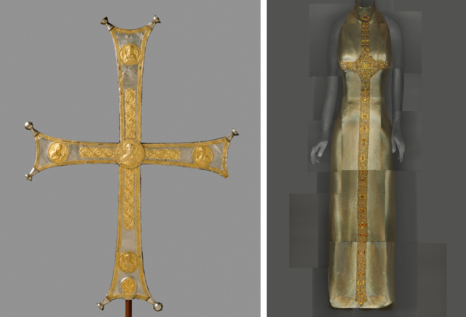

This headwear is based on dark aesthetics.The main element I want to show is the creepy, frightening style. the key notions of the project are —the fantastic, the Gothic, the grotesque, the uncanny.it's a fascination with the evil passions of man, an emphasis on the ugly and the monstrous, an obsession with morbidity and death, a blurring of the boundaries between reality and imagination. I want to create a feeling of fantasy and fairytale
I was inspired by a exihibiton called Heavenly bodies. Serving as the cornerstone of the exhibition, papal robes and accessories from the Sistine Chapel sacristy, many of which have never been seen outside The Vatican, are on view in the Anna Wintour Costume Center. Fashions from the early twentieth century to the present are shown in the Byzantine and medieval galleries, part of the Robert Lehman Wing, and at The Met Cloisters.
